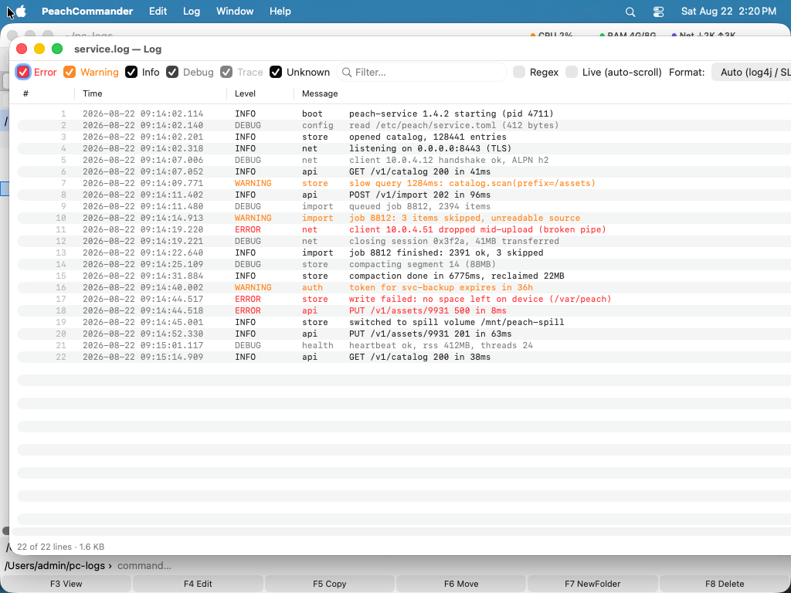

Prehliadač logov
Umiestnite kurzor na súbor s logom a zvoľte Zobraziť ako log…, aby sa otvoril v okne postavenom pre logy, nie pre text: jeden riadok na riadok, úroveň každého riadka rozpoznaná a zafarbená, filter a sledovanie, ktoré stíha, aj keď sa súbor stále zapisuje.
Je to plugin: môžete ho vypnúť alebo odstrániť v Konfigurácia ▸ Pluginy…. Bez neho zobrazí F3 log ako každý iný textový súbor.

(Obrázok: každá úroveň má vlastnú farbu a zobrazenie ďalej sleduje súbor.)Prečo sa otvorí okamžite
Súbor sa namapuje do pamäte a na pozadí sa vytvorí iba index, kde ktorý riadok začína. Nič sa nenačíta ako text, kým to nie je na obrazovke, a dekódujú sa len skutočne viditeľné riadky. Log s niekoľkými gigabajtmi sa otvorí rovnako rýchlo ako malý a skok na koniec nečíta stred.
Úrovne a farba
Každý riadok sa zaradí — Chyba, Varovanie, Info, Ladenie, Trasovanie, alebo Neznáme, keď formát nič neprezradí — a podľa toho zafarbí. Predvolené farby sledujú svetlý či tmavý vzhľad; nastavte si vlastné v predvoľbách pluginu a použijú sa vaše.
V stĺpci Úroveň je na prvý pohľad vidieť, kde sú chyby, a filtračné pole zúži zoznam na to, čo hľadáte. Zapnite Regex a filtrujte regulárnym výrazom namiesto obyčajného textu.
Sledovať súbor, ktorý stále rastie
Zapnite Naživo (automatické posúvanie) a okno bude sledovať koniec súboru, ako pribúdajú nové riadky: index sa rozšíri o pripojené bajty namiesto toho, aby sa staval nanovo, takže to zostane lacné, nech je súbor akokoľvek dlhý. Posuňte sa nahor a čítate históriu; sledovanie beží ďalej pod tým.
Ako sa v tom vyznať
| Nájsť… | Prehľadá správy; Nájsť (označiť a prejsť)… označí každý nález, takže medzi nimi môžete krokovať |
| Prejsť na riadok… | Skočí na fyzické číslo riadka |
| Prejsť na dátum/čas… | Skočí na prvý riadok od zadanej časovej značky, napr. 2024-01-15 10:23:45 |
Kopírovanie vie, čo je riadok logu: Kopírovať riadok vezme riadok pod kurzorom, Kopírovať záznam (všetky riadky) vezme celý záznam, keď sa ťahá cez niekoľko riadkov — napríklad výpis zásobníka — a Kopírovať vybrané riadky vezme presne to, čo ste vybrali.
Formáty
log4j, log4net a CSV sú vstavané a formát sa rozpozná automaticky; okno ukáže, na ktorom sa ustálilo. Ak vaše logy nie sú žiadny z nich, pridajte si vlastný v predvoľbách pod Formáty logov: regulárny výraz s pomenovanými skupinami pre časti, na ktorých záleží.
(?<time>…) (?<level>…) (?<msg>…)
Riadok, na ktorý výraz nesedí, sa napriek tomu zobrazí — len sa zaradí ako Neznáme namiesto toho, aby bol zahodený, pretože log, ktorý sa nedá čítať, je horší než log bez farieb.
Zobrazenie
Zobraziť čísla riadkov a Zalamovať dlhé riadky sú v predvoľbách. Oblasť s podrobnosťami pod zoznamom vždy ukazuje celý text vybraného záznamu, zalomený, nech zoznam robí čokoľvek.